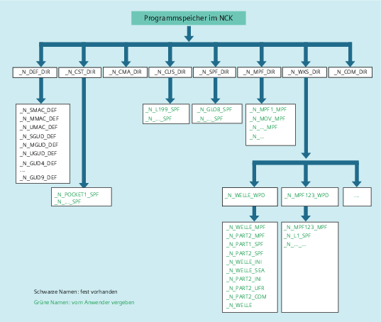

Im Programmspeicher werden Dateien und Programme (z. B. Haupt- und Unterprogramme, Makro-Definitionen) persistent gespeichert (→ Passives Filesystem).
Daneben gibt es eine Anzahl von Dateitypen, die hier zwischengespeichert werden können und bei Bedarf (z. B. bei Bearbeitung eines bestimmten Werkstücks) in den Arbeitsspeicher zu übertragen sind (z. B. für Initialisierungszwecke).
Folgende Verzeichnisse sind standardmäßig vorhanden:
Verzeichnis | Inhalt |
|---|---|
_N_DEF_DIR | Datenbausteine und Makrobausteine |
_N_CST_DIR | Standard-Zyklen |
_N_CMA_DIR | Hersteller-Zyklen |
_N_CUS_DIR | Anwender-Zyklen |
_N_WKS_DIR | Werkstücke |
_N_SPF_DIR | Globale Unterprogramme |
_N_MPF_DIR | Hauptprogramme |
_N_COM_DIR | Kommentare |
Im Programmspeicher können folgende Dateitypen eingebracht werden:
Dateityp | Beschreibung |
|---|---|
<Name>_MPF | Hauptprogramm |
<Name>_SPF | Unterprogramm |
<Name>_TEA | Maschinendaten |
<Name>_SEA | Settingdaten |
<Name>_TOA | Werkzeugkorrekturen |
<Name>_UFR | Nullpunktverschiebungen/Frame |
<Name>_INI | Initialisierungsdatei |
<Name>_GUD | Globale Anwenderdaten |
<Name>_RPA | R-Parameter |
<Name>_COM | Kommentar |
<Name>_DEF | Definitionen für globale Anwenderdaten und Makros |
Siehe auch:
Programmspeicher im NCK: Weitere Informationen
Externe Programmspeicher
Adressierung von Dateien des Programmspeichers
Suchpfad bei Unterprogrammaufruf
Abfrage von Pfad und Dateiname